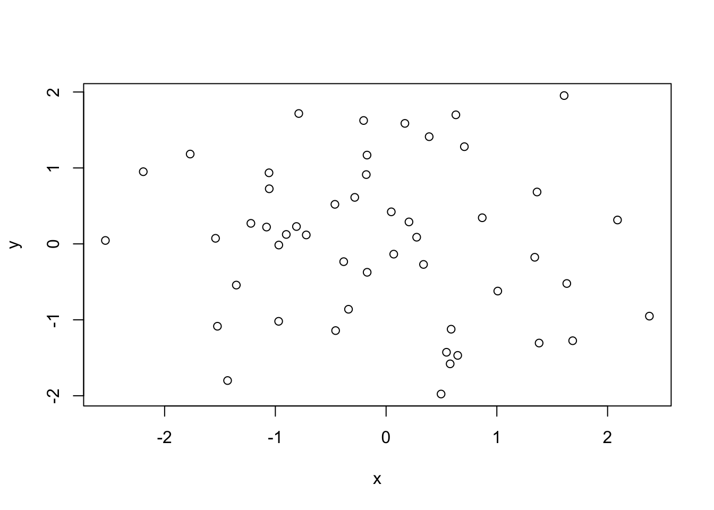
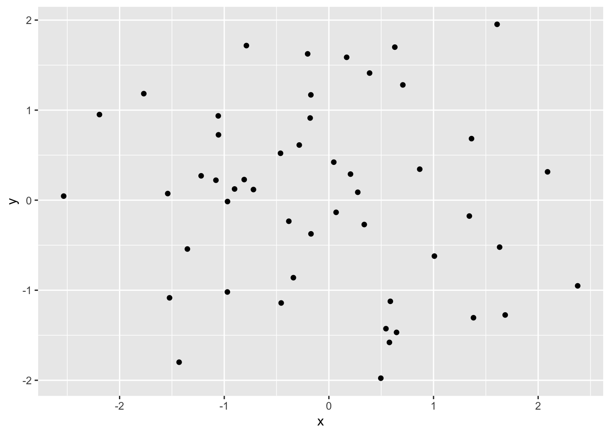
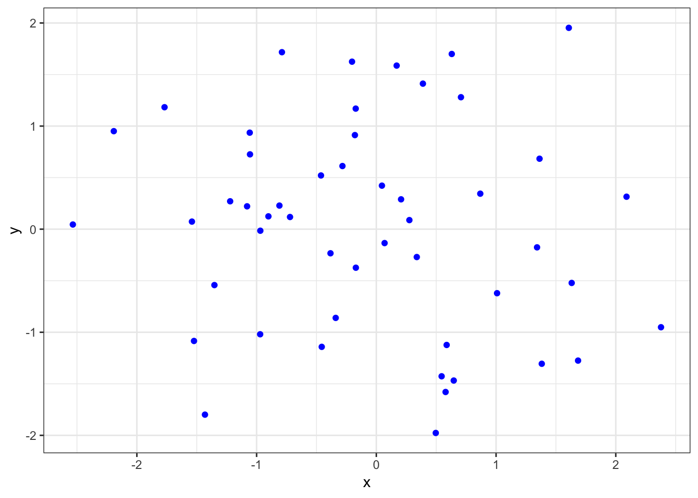

Chapter 2 Introduction
This chapter introduces the general principles for data programmng or coding involving data. Data programming is a practice that works and evolves with data. Unlike the point-and-click approach, programming allows the user to manage most closely the data and process data in more effective manner. Programs are designed to be replicable, by user and collaborators. A data program can be developed and updated iteratively and incrementally. In other words, it is building on the culminated works without repeating the steps. It takes debugging, which is the process of identifying problems (bugs) but, in fact, updating the program in different situations or with differnt inputs when used in different contexts, including the programmer himself or herself working in future times.
2.1 Principles of Programming
Social scientists Gentzkow and Shapiro (2014) list out some principles for data programming.
- Automation
- For replicability (future-proof, for the future you)
- Version Control
- Allow evolution and updated edition
- Use Git and GitHub
- Directories/Modularity
- Organize by functions and data chunks
- Keys
- Index variable (relational)
- Abstraction
- KISS (Keep in short and simple)
- Documentation
- Comments for communicating to later users
- Management
- Collaboration ready
2.2 Functionalities of Data Programs
A data program can provide or perform :
- Documentation of data
- Importing and exporting data
- Management of data
- Visualization of data
- Data models
Sample R Programs:
- R basics*
# Create variables composed of random numbers
x <-rnorm(50)
y = rnorm(x)
# Plot the points in the plane
plot(x, y)
- Using R packages*
# Plot better, using the ggplot2 package
## Prerequisite: install and load the ggplot2 package
## install.packages("ggplot2")
library(ggplot2)
qplot(x,y)
- More R Data Visualization*
# Plot better better with ggplot2
ggplot(,aes(x,y)) + theme_bw() + geom_point(col="blue")
Sample Python Programs (## represents output)
- Python using Pandas*
# Import a text file in csv format
import pandas as pd
CO2 = pd.read_csv("https://raw.githubusercontent.com/kho777/data-visualization/master/data/CO2.csv")
# Take a glimpse of the data file
CO2.head()## country CO2 _kt CO2pc CO2percent
## 0 Australia 446,348 18.6 1.23%
## 1 United States 5,172,336 16.1 14.26%
## 2 Saudi Arabia 505,565 16.0 1.39%
## 3 Canada 555,401 15.5 1.53%
## 4 Russia 1,760,895 12.3 4.86%- Python using Matplotlib*
# Using matplotlib to do a simple plot
import matplotlib.pyplot as plt
CO2pc=CO2["CO2pc"]
plt.plot(CO2pc)
In the subsequent chapters, sample programs will be provided to illustrate how to code or program in different environments to perform data science functionalities.